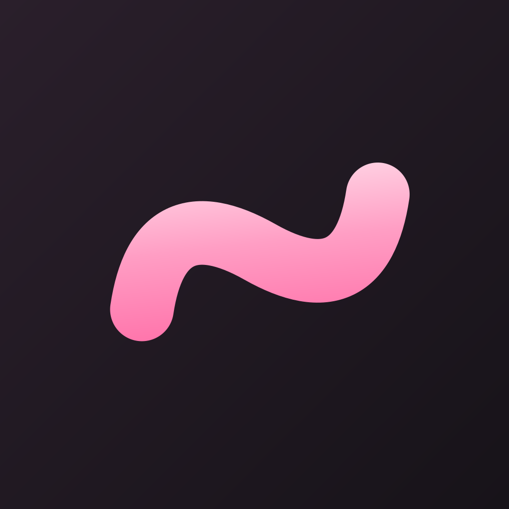

brightflowingspace不具合報告・ご質問・ご要望は、下記メールアドレスまでご連絡ください。
Bright Todoは、シンプルさを重視したToDoリストアプリです。Android・iOS・Macの3つのプラットフォームに対応しており、基本機能はアカウント登録・ログインなしでご利用いただけます（複数端末での同期を使う場合のみ、任意でログインできます）。
Proは広告表示やサブスクリプションのない、一度限りの買い切り購入です。
| Free | Pro | |
|---|---|---|
| タスク | 30件まで | 1,000件まで |
| ラベル | 3件まで | 100件まで |
| アプリカラー | デフォルトのみ | 全色 |
| ウィジェットカラー | デフォルトのみ | 全色 |
| AIで文章をタスクに入力（iOS／Macの対応機種のみ） | — | 利用可 |
| AIで音声をタスクに入力（iOS／Macの対応機種のみ） | — | 利用可 |
| データのバックアップ／エクスポート／インポート | 利用可 | 利用可 |
| リマインド通知 | — | 利用可 |
| 繰り返し | — | 利用可 |
| クラウド同期（Apple ID） | 利用可 | 利用可 |
| クラウド同期（Google） | — | 利用可 |
※ Apple IDでのクラウド同期はiOS／Mac版のみです。Android版はGoogleアカウントでの同期のみ対応しています。
※ AIでのタスク入力は、iOS／Macの対応機種のみです。Android版では使えません。対応機種では、Freeでも読み取りまで試せますが、保存はProです。
| Android | iOS | Mac | |
|---|---|---|---|
| ウィジェット | ホーム画面・2サイズ | ホーム画面・3サイズ | デスクトップ・3サイズ |
| AIで文章・音声からタスク入力 | 使えません | 対応機種のみ | 対応機種のみ |
| アプリのアイコンのバッジ（進行中の数） | なし | 利用可 | なし |
| Appleアカウントでのログイン・同期 | 使えません | 利用可 | 利用可 |
| Googleアカウントでのログイン・同期 | 利用可 | 利用可 | 利用可 |
※ AI入力の対応機種: iPhone 15 Pro／15 Pro Max、iPhone 16シリーズ以降（iOS 26以降）、Apple シリコンのMac（macOS 26以降）。どちらも、Apple Intelligenceがオンのときです。
※ Free版とPro版で使える同期の違いは、上の表をご覧ください。
Q. 機種変更・再インストール後にProが反映されません。
A. アップグレード画面の「購入を復元」をタップしてください。同じApple ID／Googleアカウントでの購入が復元されます。
Q. リマインダー通知が届きません。
A. 端末の設定アプリで、Bright Todoの通知許可がオンになっているかご確認ください。
Q. データが消えてしまいました。
A. 次のことをご確認ください。
・タスクの追加・編集の画面は、「保存」を押すまで保存されません。「保存しない」を選んだり、画面を閉じたりすると、入力した内容は残りません。
・完了したタスクは、完了して30日たつと、自動で削除されます（テンプレは削除されません）。
・ログインしていない場合、データは端末内に保存されています。アプリを削除（アンインストール）したり、端末を初期化したりすると、データも消えます。端末のバックアップ（iCloudバックアップ・Googleのバックアップ）から復元すると、データが戻ることがあります。
・クラウド同期を使っていた場合は、同じアカウントで再ログインすると、データが戻ります。同期は、Appleでログイン（iOS／Macのみ）すると無料で使えます。Googleでログインした場合の同期は、Proの機能です（ログインだけでは、同期されません）。
・機種変更や再インストールに備えて、設定の「データ」から、定期的に保存（バックアップ）しておくことをおすすめします。
Q. 「AIで文章・音声からタスク入力」のボタンが表示されません。
A. この機能は、Apple Intelligenceが使える機種のみで表示されます。iPhoneは、iOS 26以降のiPhone 15 Pro／15 Pro Max、iPhone 16シリーズ以降で、設定でApple Intelligenceがオンになっている必要があります。Macは、macOS 26以降のApple シリコン（M1以降）です。Android版では、この機能はご利用いただけません。
Q. AIで入力した文章は、外部に送信されますか。
A. 文章からタスク名や日時を読み取る処理は、端末内のAI（Apple Intelligence）で行い、開発者のサーバーには送信されません。音声は、端末の音声認識機能で文字にしてから、同じ処理を行います。日本語と英語の文章に対応しています。
Q. クラウド同期を使うとどんな情報が送信されますか。
A. タスク・ラベルの内容（タイトル・メモ・日時・色・完了状態など）が、ログインしたご本人のアカウントに紐づけてGoogle FirebaseまたはApple CloudKitに保存されます。詳しくはプライバシーポリシーをご覧ください。
個人情報の取り扱いについてはプライバシーポリシーをご覧ください。
For bug reports, questions, or feature requests, please contact us at the email address below.
Bright Todo is a to-do list app built around simplicity, available on 3 platforms — Android, iOS, and Mac. Core features require no account or login (signing in is only needed if you want to sync across multiple devices).
Pro is a single, one-time purchase — no subscription, no ads.
| Free | Pro | |
|---|---|---|
| Tasks | Up to 30 | Up to 1,000 |
| Labels | Up to 3 | Up to 100 |
| App Color | Default only | All colors |
| Widget Color | Default only | All colors |
| Add tasks from text with AI (supported iOS/Mac devices only) | — | Available |
| Add tasks by voice with AI (supported iOS/Mac devices only) | — | Available |
| Data Backup / Export / Import | Available | Available |
| Reminders | — | Available |
| Repeat | — | Available |
| Cloud Sync (Apple ID) | Available | Available |
| Cloud Sync (Google) | — | Available |
* Cloud sync via Apple ID is available on iOS/Mac only. The Android version supports Google sync only.
* Adding tasks with AI is available on supported iOS/Mac devices only, and is not available on Android. On supported devices, Free users can try the reading step, but saving requires Pro.
| Android | iOS | Mac | |
|---|---|---|---|
| Widget | Home screen, 2 sizes | Home screen, 3 sizes | Desktop, 3 sizes |
| Add tasks from text or voice with AI | Not available | Supported devices only | Supported devices only |
| App icon badge (number of in-progress tasks) | None | Available | None |
| Sign in & sync with Apple | Not available | Available | Available |
| Sign in & sync with Google | Available | Available | Available |
* Devices that support AI input: iPhone 15 Pro / 15 Pro Max and iPhone 16 series or later (iOS 26 or later), and Macs with Apple silicon (macOS 26 or later). Apple Intelligence must be turned on.
* See the Free vs. Pro table above for which sync option is available on Free and Pro.
Q. I switched devices / reinstalled the app and Pro is no longer active.
A. Tap "Restore Purchase" on the upgrade screen. Your purchase will be restored using the same Apple ID or Google account.
Q. I'm not receiving reminder notifications.
A. Check that notifications are enabled for Bright Todo in your device's system settings.
Q. My data disappeared.
A. Please check the following.
• On the Add Task and Edit Task screens, nothing is saved until you tap "Save". If you choose "Don't Save" or close the screen, what you entered is discarded.
• Completed tasks are deleted automatically 30 days after you complete them (templates are never deleted).
• If you are not signed in, your data is stored on your device. Uninstalling the app or resetting your device removes it. Restoring your device from a backup (iCloud Backup or Google backup) may bring the data back.
• If you were using cloud sync, signing back in with the same account restores your data. Sync with Apple (iOS/Mac only) is free. Sync with Google is a Pro feature (signing in alone does not sync).
• To be safe when changing devices or reinstalling, save a backup regularly from "Data" in Settings.
Q. The "Add tasks with AI" button is not showing.
A. This feature appears only on devices that support Apple Intelligence: iPhone 15 Pro / 15 Pro Max or iPhone 16 series and later running iOS 26 or later with Apple Intelligence turned on, or a Mac with Apple silicon (M1 or later) running macOS 26 or later. It is not available on Android.
Q. Is the text I enter with AI sent anywhere?
A. The step that reads task titles and dates from your text runs on your device using Apple Intelligence, and it is not sent to the developer's servers. For voice, your device's speech recognition turns speech into text first, then the same on-device step runs. English and Japanese text are supported.
Q. What information is sent when I use cloud sync?
A. Your task and label content (title, memo, dates, color, completion status, etc.) is stored on Google Firebase or Apple CloudKit, tied to your own signed-in account. See our Privacy Policy for details.
See our Privacy Policy for details on how we handle information.